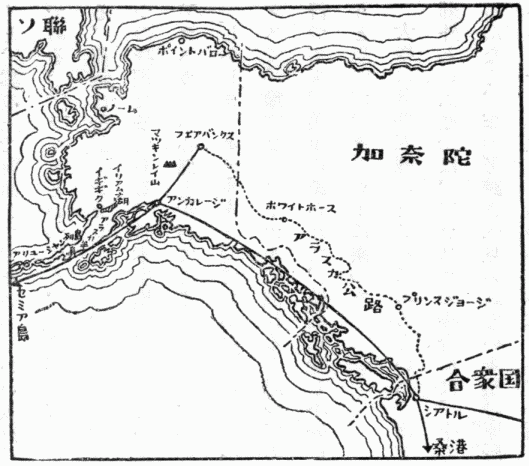

七月六日の午後、ノース・ウェスト機で羽田を立った時は、雨の中であった。しかし間もなく雲の上に出たので、気象状態はそう悪くなかった。
ときどき霧雨が窓を濡らし、灰色の雲がちぎれちぎれにとぶ。そして機は時々軽くゆれた。ところが
霧の状態は極めて安定なようであった。あとでフェアバンクスの気象台で、その日の天気図を見せて貰ったので分ったことであるが、弱いが複雑な構造の不連続線が、ちょうどこの頃にこの航空路を通り抜けて、太平洋側に出た後だった。それで気流の状態は上々であった。
しかしこの天空の世界と、濃霧の底に横たわっている地上及び海上の世界とは、全くひどい違いなのである。戦争中に
北国の海に特有なこの恐しい濃霧が、千島からアリューシャンにかけて、じっと垂れこめている今の時期には、海上の人々は、生命がけで手さぐりの航海をしなければならない。しかし飛行機にとっては、今が一番有難い気象条件にある。九千フィートから一万フィートくらいの高度で、西寄りの気流に乗って、滑るような飛行を続けている。というよりも、飛行機は空中の一点にじっと止っていて、景色だけが極めて徐々に移ってゆく。
プロペラの廻転もそうやけに激しくはなく、速いがしかし落着いた廻転を定常的に保っている。非常に力強い感じである。定期航空路も、ようやく本物になったという気がする。空のあかね色もいつか消えて、周囲はようやく暗くなってくる。すると今までは気がつかなかったが、エンジンカバーの隙間から見える排気の火が、赤く見えてくる。九百度くらいにもなっていそうな火の色である。その火の色をじっと見ているうちに、いつの間にか眠ってしまった。
スチュワーデスにバンドを締めてくれと注意されて、目をさましてみると機は大分ゆれている。外は真暗であるが、霧の中に降りたらしい。セミア島に着陸の用意をしているのであろう。何も見えない真暗な霧の中で、機はランプを明滅させている。ランプをつける毎に、窓を打つ霧が白く光る。そのうちに海面が黒く見えてきた。海面に近いところだけ、霧がちょっと切れているのである。そして真暗な海上の彼方に、たくさんの灯が、一直線に並んだのが一瞬見える。セミア島の滑走路の照明である。
アリューシャン群島の先端にあるこの孤島に、夜間着陸装置の完備されているのにも、隔世の感が深い。リンドバークの『北方の旅』も、そう
機は完全に霧の下に降りた。大きく一廻りすると、滑走路の
真暗な外に出てみると、風が
待合室の建物も、途中の倉庫めいた建物も、みな土地を掘って建てられ、半分は地面よりも下になるように造られている。もちろんこうするより
よく見ると、掘り上げた土を建物の周囲に盛って、それを幾分ロックガーデン風に造ってある。この恐しい島に住まねばならない人たちへの、せめてもの心づくしなのであろう。このガーデン風にちょっと手を入れてあるところに、千島などと同じような高山植物が、可憐な白い小さな花をつけている。その外には、牧草風な雑草が少しあるくらいで、一面に荒れ果てた土地である。霧雨に濡れて寒いので、
一時半出発。
機は急速に高度をとって、どんどん昇って行く。そして六千フィートくらいのところで、やっと霧の上に出る。そしてまた落着いた静かな飛行にうつる。アリューシャンの島々は、一面にこの霧の下に埋めつくされ、相変らず平坦な霧頂の上の飛行をつづける。セミア島の画面をカットすれば、前どおりの景色の連続である。しかし空はだんだんと白んでくる。
いつの間にか寝込んでしまったが、ふと眼を覚ますと、茶褐色の平らな土地の上を飛んでいる。空はよく晴れ、白いちぎれ雲が、点々と下を流れている。アラスカの本土からずっと西へ伸び出ているアラスカ半島の上を飛んでいるのである。初めて見るアラスカの土地は、予想どおりに、人界を遠く離れた景色である。
立木らしいものは、ほとんど見られない。ただ一面に平滑な、
やがて遥か彼方、煙霧めいた層雲の上に、高い真白な峻峰が二つ並んで、その姿を現わしてくる。初めはちょっとマッキンレイかと思ったくらいの壮大な岩山である。しかしやはりアリューシャン山脈中の高峰であることが分った。一万数千フィート級のものらしい。それでも寒帯地方の高山だけに、初めて見る峻厳な山の姿である。あこがれのアラスカへ遂にきたという感じがした。
アンカレージの近くへくると、さすがに緑の土地になる。しかし針葉樹の
初めはアンカレージに一泊して、すぐシアトルへ飛ぶ予定にしていた。せっかくアラスカを通るのだから、気象関係の人にでも会って、アラスカの雪と氷との資料を、少しもらって帰りたいからであった。それで移民官の人に相談してみたら、アンカレージではとても駄目だろうという。アラスカではフェアバンクスの大学へ行かないと、そういう問題に興味をもっている人には会えないだろうという話であった。もっとも御自身は興味があるらしく、話をよくきいて、いろいろ親切に教えてくれた。それで急に気がかわって、フェアバンクスまで足をのばそうという気になった。しかしノース・ウェストの方では、確かなことが分らない。それでタクシーを頼んで、とにかく街へ出て、アラスカ航空会社の支店を訪ねることにした。
街までは五マイルくらいあり、その間ずっと、
それよりも驚いたのは、タクシーに全部無線電話がついていることであった。動き出す前に運転手が送話器をとって「どこどこへ行く」というようなことをいう。すると向うからすぐ返事がきて、これは拡声器から出る。「一体それは何かね」ときくと、「オフィスに通知するのさ」と、少しけげんな顔で答える。きっとひどい田舎者がきたと思ったにちがいない。
市街に着いてみたら、アラスカ航空会社と、ノース・ウェスト会社との出張所同士で、話は簡単に決っていた。しかし今日はもう便がないから、明日にするより仕方がない。それともチャーター（ハイヤー）で行くかときく。とんでもない話である。飛行機を一台借り切って、フェアバンクスまで飛ばすなどということは、夢にも考えていなかったので、初めは意味が分らなくて、へどもどした。もちろんアンカレージに一晩泊ることにしたが、今はホテルはどこも満員で、ちょっと見込がないという話であった。それでもう
ベルを押すと、半身
外国へ一足踏み出して、第一夜が窓のない木賃宿というのも少し凝り過ぎているが、時々こういうことには経験があるので、別に慌てはしなかった。部屋にいても、どうにもしようがないので、当てもなく街をぶらぶら歩いてみた。新しく建設されつつある街で、米国の新開地というものは、こういうものかと、大いに参考になった。粗い格子の模様の赤いスエーターを着て、広つばの帽子をあみだにかぶった男に、たくさん行きあう。『アラスカ物語』の主人公を、勝手に想像して、いい気持になって、街はずれまで二度ばかり往復してみた。薄明の中をぶらぶら海岸近くまで行ってみると、
そのうちに腹が空いてきたので、どこかで夕食をと思ったが、なかなか恰好の店が見当らない。『アラスカ物語』の主人公たちが一ぱいはいっている店は、どうも勝手が分らない。さんざん探して、普通のレストラン風の店をやっと一軒見つけた時はちょっと嬉しかった。
アラスカは物価が非常に高いそうで、ここの
これでお腹が一杯になって、いい気持で木賃宿の第一夜はぐっすり寝た。翌朝洗面所で顔を洗っていると、昨日の文身の先生がやってきて「アラスカへ何しにきたのかい」ときく。顔に似合わぬやさしい声なので、ちょっと意外であった。文身といっても、胸に十字架、両腕は鳩が羽を拡げて飛んでいる絵柄である。日本の
アラスカの第一夜は、ことなく明けた。フェアバンクス行の飛行機は、十時二十分離陸。アメリカ本国のお金持で、夏の旅行にきたという恰好の人が五、六人いる。事実アラスカの空の旅は、金持になったら是非一度はやるべき空の旅である。
アラスカ山脈の雪渓。マッキンレイの峻峰。見渡す限りの荒涼たるアラスカの大平原。その中を悠々と流れるユーコンの支流テナナ河の蛇行。すべて日本で考える景色とは、まるで桁がちがっている。阿寒の雄大な景色で観光客を云々などと気楽なことをいっていてもはじまらないということがよく分った。それにしても日本人のくせに、アラスカの空の旅などとは、いえた義理ではないのだが、これも雪と氷のお蔭である。

北米第一の高峰二万三百フィートのマッキンレイと、雲の上で対面して、たいへんいい気持になって、フェアバンクスへ着いた。ちょうど十二時である。アラスカといっても、さすがに首都だけあって、繁華街は立派なアメリカの都市である。荷物は全部アンカレージで、シアトル行きの飛行機に頼んでおいたので、書類入れの
しかしまずホテルをとっておかねばならないと思って、二、三聞いてみたが、夏のフェアバンクスで、予約なしにホテルに泊れると思っていたのが、大いに不覚であった。どこのホテルへ行っても、美事に断られて、さすがに少し不安になってきた。それでとにかく大学へ行ってみようと思って、タクシーに乗った。
大学は郊外五マイルのところにあるという。街をはずれると、急に未耕の荒野である。大都市の郊外という概念は、アラスカの場合には、全く当てはまらない。街を一歩出ると、人家はもちろんなく、畑の形跡さえ見られない未墾の
たくさんある建物の中で、いい加減なところにタクシーをつけさせて、学生らしい男にきいてみたら、運よくそれが地球物理学教室であった。「誰に会いにきたのか」ときくから「誰でもいい、雪や氷に興味をもっていそうなプロフェッサーのところへ案内してくれ」と頼んだ。学生は頭をかしげながら「一体
この大学は、最近までカレッジで、アラスカ農鉱学校と呼ばれていた。研究室なども最近まで非常に貧弱であったそうである。ところが戦争中にユニバシティになり、現在はシートン教授を中心として、イオン層の研究を教室一同で、盛んにやっている。
アラスカはなんといっても、ごく最近まで「金鉱物語」の現場であった。今でも
ここの教室の表看板であるイオン層の研究は、無線通信の障害を除くのが目的で、その研究にはフェアバンクスが一番地理的に有利な立場にある。それから
北極光というと、ノルウェイの学者たちの研究が、昔から有名であり、日本でもその研究はよく知られている。しかしアラスカにおけるこの方面の研究は、ほとんど知られていない。ところでこの北極光の研究を、アラスカ農鉱学校時代から、一人でこつこつとやっていた学者があった。フーラー教授という人で、近年亡くなったが、その人が十何年か一人で北極光の写真を撮りながら、観測を続けていたのだそうである。しかしアラスカ農鉱学校の研究など、誰もあまり注目しないので、フーラー教授はいわば不遇のうちに亡くなったわけである。研究費などもほとんどなかったそうである。
ところが近年になって、無電の発達につれて、電波の伝達と密接な関係のあるイオン層の研究が、実用上非常に大切な題目となってきた。それでアメリカ政府は、このアラスカの大学に、地球物理学研究室を作り、フーラー教授の研究を続けるとともに、新しくイオン層の研究を始めることにした。それでイオン層の権威であるシートン教授を主任教授として、三十名近い研究員を配置して、大々的な研究を始めたのである。
この地球物理学研究室は、昨年から大きい研究所に発展して、立派な建物が建造中であった。コンクリー卜三階建で、建設費は百万ドル（日本金にして三億六千万円）の
アラスカ農鉱学校で、農業にも鉱業にも関係のない北極光の研究などをしていたら、きっと周囲から
ところで面白いことに、雪や氷の研究は、ここではあまりしていない。それで一度雪の話を頼まれた。総長や、学部長も出席して、今後この大学は地理的にみて、雪や氷の研究にも進みたいといっておられた。大学のいわゆる上の人たちが、みな研究には非常に熱心なので、ちょっと感心した。
フェアバンクスの第一夜は、太陽がほとんど沈まないので、すっかり寝そびれてしまった。翌朝シートン教授が自動車で迎えにきてくれたので、ねむいのを我慢してついて行った。車中でアラスカ公路の話が出た。凍上で一部こわれたが、それは工事を急ぎ過ぎたために手抜かりがあったので、もうすっかり直っているそうである。昨年の夏はシートン夫人とお嬢さんたち三人だけで、
ここの大学の研究は、前にいったように、フーラー教授の
イオン層の研究は、ジョーンズ博士が担当していた。原理は英国のアップルトン教授が、もう二十五年くらい前から始めていた方法と同じである。短波を送り出して、イオン層から反射してくるのを受けて、その高さを出す方法で、別に珍しいことはない。唯ここでは、垂直に上へ送り出して、同じ部屋で反射を受ける点がちがっていた。その二十四時間連続観測を、もう五年近く続けてやっているそうである。Ｅ層からの反射とＦ層からの反射とが、日変化、月変化、及び長期変化をするのを、こうして根気よく測り、イオン層の電子密度、温度などを、くわしく調べているのである。月の
こういう研究は、一個所でいくらくわしくやっても、大した結果、特に実用的な効果は得られない。それでこの研究は、もっと
気象学者はヤーク教授ただ一人である。その研究も、やはり無線通信と関係している。波長数センチの超短波の通信が、気象状態によってどう妨害されるかという問題を研究していた。この問題では、上空の低温における湿度の測定が一番の難関である。低温における湿度の測定は、一時はダンモア型の電気湿度計で、問題が解決したように思われていた。しかしああいう間接的な方法では、やはり最後のところできめ手にはならない。けっきょく光電管でも使った露点法が、一番いいのではないかという話になった。この低温における湿度測定の問題は、あまり大仕掛の設備も要らず、しかも気象学の根本問題に寄与する問題である。日本などで落着いて採り上げるには、恰好の研究題目であろう。
シートン教授との話の中で、日本の科学の前途に対して、たいへん参考になる話が出た。それは戦後の英国の研究である。英国も今度の大戦で、経済上の
講演後ノーケ博士が、野外観測所を案内しようといって、大学から六マイル離れたところにある通信障害観測所へ連れて行ってくれた。そこは全くアラスカの荒野の真ん中である。少し開けた草原の中に、木造の観測所が一軒あり、自動車が二台、ひどく汚れたまま、放り出したような恰好で置いてあった。
中へはいってみると、三人の若い観測者が、記録の整理をしていた。三方の壁には、一面に自記受信記録計が一杯並んでいる。ワシントンとハワイとの放送を、四段の波長に分けて、それぞれ連続的に記録しているのである。昼夜連続の記録をもう八年とっているという。太陽黒点の周期が約十二年なので、少くもその一周期は観測する必要がある。「あと五年はどうしてもかかる。根気のいい話だ」と、ノーケ博士は苦笑していた。
これらの記録は、一応の整理をして、ワシントンへ送られ、各地の記録とつき合わせて調べられる。そしていろいろな結果が得られるのである。従ってここの研究者たちは、宏壮な大建築の一部を造っているようなもので、スターには永久になれない。しかしここはまだいい方で、無線通信の障害のうちには、いわゆるデリンジャー現象と、極地方現象とがあるが、その極地方現象がはっきり出てくるので、少しは楽しみがあるようであった。
外へ出てみると、たいへんな蚊である。
冬になればもちろん蚊はいないが、そのかわり一日中
フェアバンクスで、一番閉口したのは、夜がないことであった。いつまでも明るいので、ついうっかり手紙の整理などしていたら、十一時半になった。慌てて床に入ったら、いいあんばいに少しうす暗くなってきた。ところが少しうとうとと眠ったかと思うと、もう周囲がすっかり明るくなったので、びっくりして起きた。太陽はもう大分のぼって、雲が真赤に光っている。時計を出してみると、まだ夜中の一時半である。話には聞いていたが、実際にこの夜のない世界にきてみると、少々勝手が違って閉口した。飛行機がいいあんばいとばかりに、ごうごう飛んでいる。
犬も寝にくいとみえて、よく吠える。どうも
その中を少し歩いてみたが、どうも調子が変である。白昼の大都会に何か異変が起り、人間だけが突如として消え失せた世界のようで、少し薄気味悪くなってきた。それで写真を一枚撮って、早々に切り上げてホテルへ帰ってきた。
夏はそれでもまだいい方で、冬になると、この正反対になるのだから思いやられる。昼前十一時ごろにやっと東の空が少し明るくなる。そして昼食をすませて一休みしているうちに、もう夜になるのである。半年近くそういう状態が続くのであるから、保健上にもいろいろな問題が出て来る。
大学の食堂でシートン教授にこの話をしたら、「その通りだ。学生の健康については、それで十分注意している。太陽灯もつけているが、その外にヴィタミンＤを十分
気温はクリスマス前頃が一番寒くて、零下四十度くらいの厳寒が、三週間近くも続く。最低は零下五十一度という例が、昨年もあったそうである。川はもちろん凍り、十一月中頃から五月初旬までは、自動車が通れるという。もちろん一番ひどい厳寒の間は、人間は家の中にじっとしているより仕方がない。それでいて一日中夜なのであるから、ちょっと想像しただけでもたいへんな話である。北海道くらいでは、まだまだ寒い国の仲間入りは出来ないわけである。
自然条件がそのように極端に悪い代りに、設備の方はさすがにアメリカだけあって、十分に行き届いている。大学は街から五マイルも離れた荒野の真ん中にあるので、学生は全部寄宿舎にはいっている。教授たちにももちろん官舎がある。もっとも官舎はまだ十分でないので、つぎつぎ新築しているそうである。今度の新研究所の裏にも、立派な官舎が六軒造りかけになっていた。ちょっと覗いてみると、基礎は全部出来ていた。床が八尺くらいの高さで、半地下式になっている。この部分はコンクリート造りで、この一階が倉庫、乾燥室、ボイラー室になっている。その上に丸太組の木造の平家が出来るのだそうである。一般の住宅も、大体こういう調子になっている。
たいていの家の台所は、全部電化されている。ぴかぴか光った電熱料理
ポイントバローといえば、フェアバンクスの気象台で、予報係のリンドレイ氏から、驚くべき話を聞いた。それは北極までの気象観測飛行を、一日おきに定期にやっているという話である。Ｂ29を使って、フェアバンクスから
アラスカは、近代的な文化設備と、自然の脅威との戦場である。野外観測所からの帰りに、ノーケ博士の車でフェアバンクスの繁華街へ出た。デパートの前でちょっと車を止めると、打合せがしてあったものとみえて、ノーケ夫人が買物の大きい包みを持って乗り込んできた。「今夜は外で妻と夕食をする晩に当っているのだが、一緒にどうですか」とすすめられたので、遠慮なく御馳走になることにした。「アラスカはもう何年になりますか」ときくと「二年半。もう沢山です」と、夫人は
何とかいうネオンサインの文字の出ているカクテル・バーに入る。外は明るくても、時間になるとネオンサインをつけるところが面白い。その二階へ上って行くと、窓を全部しめて、真暗にしてある。そしてほの明るい程度の蛍光灯のスタンドが、卓の上だけをわずかに照らしている。ノーケ博士はマンハッタン・カクテルを注文しながら、「一週間に一度こうして、妻と外で夕食をするのだ」と説明してくれた。話はすぐ真面目な話になって、東京の進駐軍に対する日本人の感情の問題、最近の共産党の動き、戦後の
カクテルをすませて、下の食堂へ下りてみると、夜が明けたように明るい。一時間ばかり人工の夜を味わったわけである。
食事を簡単にすませて、自動車で街をぐるぐる廻り、いろいろ説明をしてくれた。初期の移住者の丸太小屋、中期の住宅、戦後急激に
十時すぎになって、といってももちろん昼間であるが、ワイラー氏という変った人の家へ連れて行かれた。ワイラー氏の話は、次に紹介しよう。それからまた最近ポイントバローから移ってきたジャギイ氏という人の新築の家を訪ねた。台所と居間と食堂とを兼ねた一室は、一側の壁が一枚
自動車で住宅街を走っているうちに、ノーケ博士は、ちょっと車を停めて、「珍しい男に紹介したいが、はいってみる気はないか」という。芝生にとりまかれた美しい小型の住宅の前である。その芝生の中には、
ノーケ博士は、その子供に「お父さんはいるかい」と声をかけながら、どんどん玄関の戸をあけてはいって行く。そして私を促しながら、さっさと地下室の方へ下りて行った。
地下室といっても、半地下室であって、天井も十分高い。その中の一室で、この家の主人公、ワイラー氏が大きいリュックを前にして、いろいろなものを一杯散らかしている。魚釣りに行く準備だということはすぐ分った。ワイラー氏は六尺一、二寸の長身で、
いろいろなものを乱暴にリュックに放り込み、最後に緑色のゴム長をぎゅうぎゅう詰め込んで、さあこれでよしという恰好で、隣の室へ案内してくれた。「ここが先生の仕事場さ」と、ノーケ博士は私の方をちょっとふり返り気味にいう。壁一杯に野獣と魚の絵とを貼り込んだ部屋である。真ん中にかなとこが一つおいてあって、その周囲にはいろいろな金工具が散らばっている。そして壁に沿った長い卓の半分は、
話はなかなか面白く、それに知識が驚くほど正確である。もっとも前に地理の教授をしばらくしていたというのだから、その方面が特にしっかりしているのも無理はない。今は土地の管理人をしながら、狩猟と魚釣とをやっているが、その方がすっかり本職になってしまったらしい。そして時々雑誌に寄稿などもしている。
ところで、ワイラー氏の話であるが、何よりも話の桁がすべてちがっているので、少し
たいへんな距離で、汽車などもちろんある所ではない。きいてみると、アンカレージで水上機をやとって、イギギクまで飛び、そこを根拠地にして、方々の沼へ着水して釣り歩くのだそうである。
さすがに少しあっけにとられていると、天然色写真をたくさん持ち出してきて、見せてくれた。なるほど赤い小型水上機を使っている。釣り上げた大きい虹鱒が、真赤な筋を見せて並んでいる写真もある。少々恐れ入っていると、「こんな小型機だと、一時間三十五ドルから五十ドルくらいだが、二つエンジンの大型機だと、一回五百ドルくらいとられる」と、平気な顔をして説明してくれた。
ノーケ博士はよく知っているとみえて、少しも驚かない。「冬は狩猟、夏は魚釣がこの男の職業さ。そして時々フィッシュ・ストーリイをマガジンに書いているんだよ」と註をつけてくれた。
「芝生にあった
そのうちに雪の話になった。今まで大分圧迫されていたので、雪なら日本が一番ひどいでしょう、本州の北海岸では、五メートルくらい積る所が珍しくないという話を持ち出した。そしたらアラスカの第一区（
「それは局部的な吹き溜りでしょう」ときくと、「氷冠といっても、面積は日本の本州の半分くらいはあるだろうかな」といいながら、地図帳を持ち出してきた。「そんなにはない。北海道くらいの面積だ」といって、地図を見せてくれた。今まで日本で、若い学生たちに、「世界を見る眼が大切だ」などと話していたのは、少々
翌朝約束どおりに、十二時に飛行場の待合室へ行ってみたら、ワイラー氏が、リュックだの、トランクだの、釣竿の筒の縛ったのだの、七個ばかりの大荷物を抱え込んで、すまして腰をかけていた。夫人も見送りにきていて、昨夜は失礼しましたというような意味の挨拶をされた。この挨拶だけくらいが、ちょっと日本と似ている話であった。